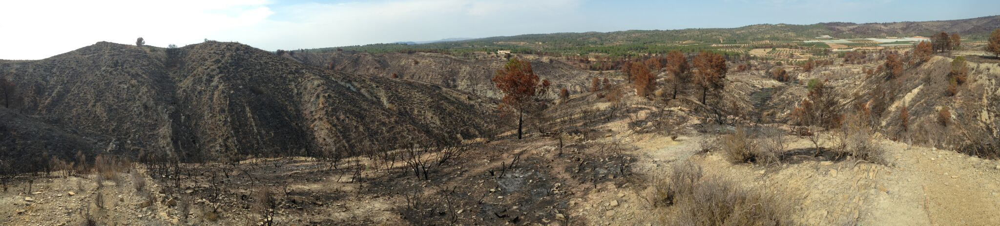
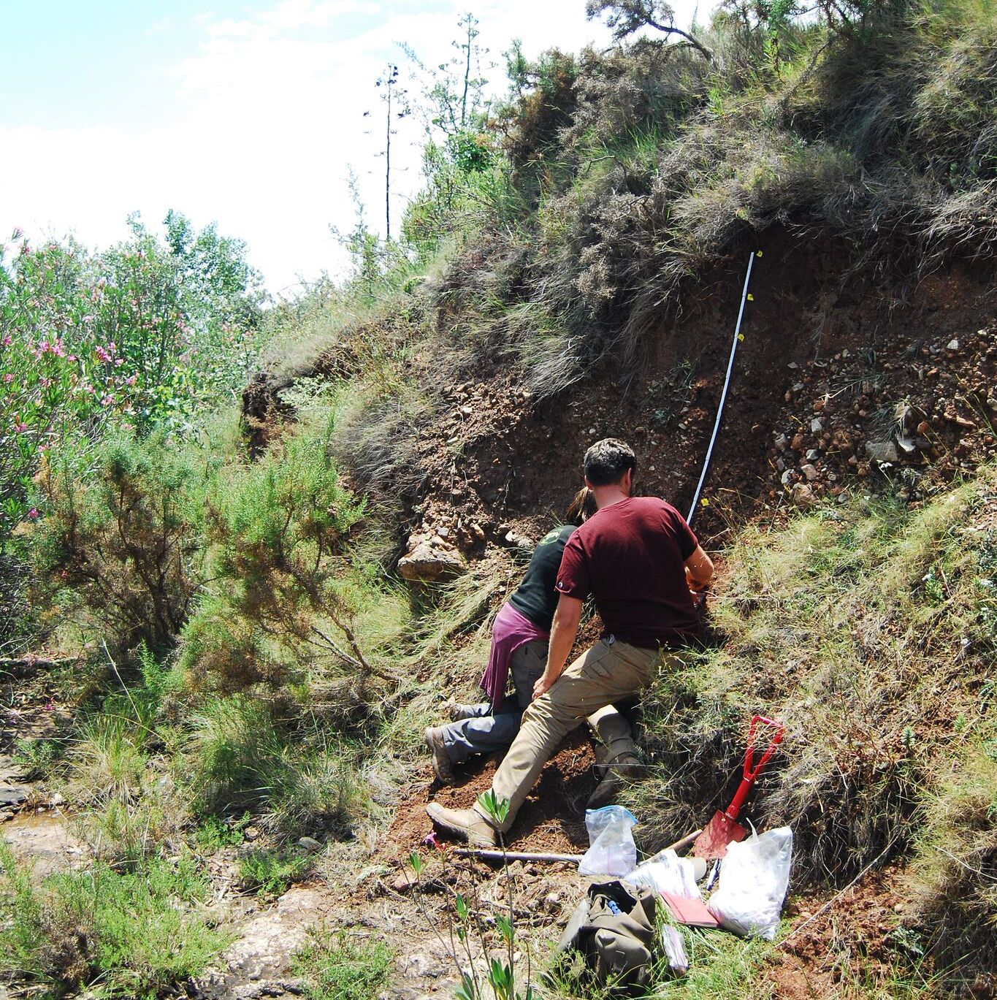
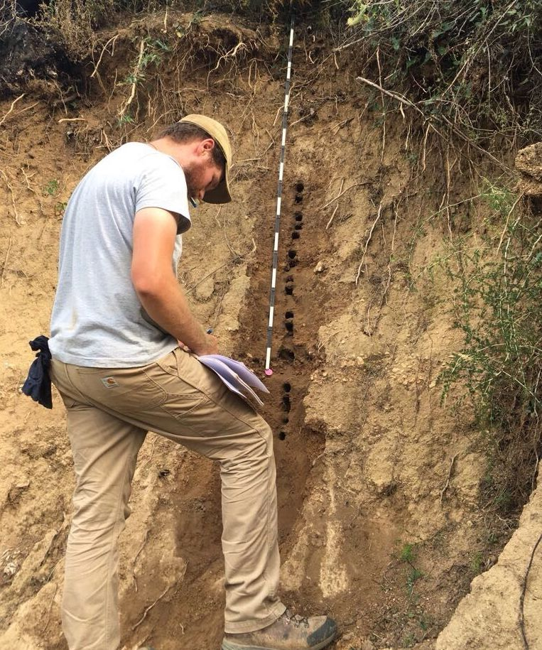

Anthropogenic Fire and the Origins of Agricultural Landscapes Project
This project focuses on exploring socio-ecological histories from several field sites in the Canal de Navarrés, Serpis, and Hoya de Buñol regions of eastern Spain and is currently funded by a National Science Foundation Archaeology Program dissertation improvement grant. This work integrates GIS and Bayesian approaches to archaeological survey, quantitative models of wildfire and its ecological effects, and an "off-site" archaeological perspective to study the impacts of anthropogenic fire on landscape dynamics and human socio-ecological systems at regional scale during the Neolithic period (7,700-4,500 cal. BP). The data generated through this research are used to test spatially explicit models of human niche construction through time, including the relative importance of climate and human drivers of fire regimes, and the degree of homogeneity/heterogeneity in interactions among land-use, fire, and vegetation. Current results indicate that landscape change due to anthropogenic fire during the Neolithic period was likely heterogeneous and tied to the intensity of land-use by early farmers. Articles detailing this project are currently under review at the Journal of Archaeological Science and Quaternary International.
Associated Products
Papers
- Grant Snitker Agustín Diez Castillo, C. Michael Barton, Joan Bernabeu Auban, Oreto García Puchol, Salvador Pardo-Gordó
Accepted - Patch-based survey methods for studying prehistoric human land-use in agriculturally modified landscapes: A case study from the Canal de Navarrés, eastern Spain. Submitted to Quaternary International. - Grant Snitker
In review - Identifying Natural and Anthropogenic Prehistoric Fire Regimes through Simulated Charcoal Proxy Records. Submitted to Journal of Archaeological Science. - Díez Castillo, Agustin, Oreto García Puchol, Joan Bernabeu Aubán, C Michael Barton, Salvador Pardo Gordò, Grant Snitker, Wendy Cegielski, and Sean Bergin.
2016 - Resiliencia y cambio durante el Holoceno en la Canal de Navarrés: recientes trabajos de prospección. Archivo de Prehistoria Levantina. Vol. XXXI, Valencia, p. 169-185.
Presentations
- Snitker, Grant
2017 - Fire, Humans, and Landscape Change: Simulating Charcoal Proxy Records to explore Anthropogenic Fire and Neolithic Landscapes in the Western Mediterranean. Paper presented at the COMSES Net Virtual Conference 2017, Tempe, AZ. - Snitker, Grant
2017 - Reconstructing Anthropogenic Fire Regimes Using Multidisciplinary Methods: Preliminary Results from the Neolithic (7,700–4,500 cal. BP) in Eastern Spain. Paper presented at the 82st Annual Meeting of the Society for American Archaeology, Vancouver, B.C. - Snitker, Grant
2016 - Fire, humans, and Landscape Evolution: Modeling Anthropogenic Fire and Neolithic Landscapes in the Western Mediterranean. Paper presented at the 81st Annual Meeting of the Society for American Archaeology, Orlando, FL - Snitker, Grant
2015 - Linking the Social and Ecological Dynamics of Anthropogenic Fire Regimes through Agent-based Modeling (ABM) and Geographic Information Systems (GIS). Paper presented at the 6th Association for Fire Ecology Fire Congress, San Antonio, TX.
Software
- Snitker, Grant
2017 - Model of Charcoal Dispersion and Deposition in Eastern Spain (Version 2). CoMSES Computational Model Library. Retrieved from: https://www.openabm.org/model/4795/version/2. - Snitker, Grant
2017 - GIS charcoal source area model for archaeological applications. R Script version 2.0. Electronic document, https://github.com/gsnitker/Charcoal_Source_Area.